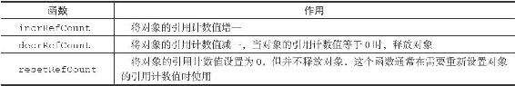

8.8 内存回收
因为C语言并不具备自动内存回收功能，所以Redis在自己的对象系统中构建了一个引用计数（reference counting）技术实现的内存回收机制，通过这一机制，程序可以通过跟踪对象的引用计数信息，在适当的时候自动释放对象并进行内存回收。
每个对象的引用计数信息由redisObject结构的refcount属性记录：
typedef struct redisObject {
// ...
//
引用计数
int refcount;
// ...
} robj;
对象的引用计数信息会随着对象的使用状态而不断变化：
·在创建一个新对象时，引用计数的值会被初始化为1；
·当对象被一个新程序使用时，它的引用计数值会被增一；
·当对象不再被一个程序使用时，它的引用计数值会被减一；
·当对象的引用计数值变为0时，对象所占用的内存会被释放。
表8-12列出了修改对象引用计数的API，这些API分别用于增加、减少、重置对象的引用计数。
表8-12 修改对象引用计数的API

对象的整个生命周期可以划分为创建对象、操作对象、释放对象三个阶段。作为例子，以下代码展示了一个字符串对象从创建到释放的整个过程：
//
创建一个字符串对象s
，对象的引用计数为1
robj *s = createStringObject(...)
//
对象s
执行各种操作...
//
将对象s
的引用计数减一，使得对象的引用计数变为0
//
导致对象s
被释放
decrRefCount(s)
其他不同类型的对象也会经历类似的过程。